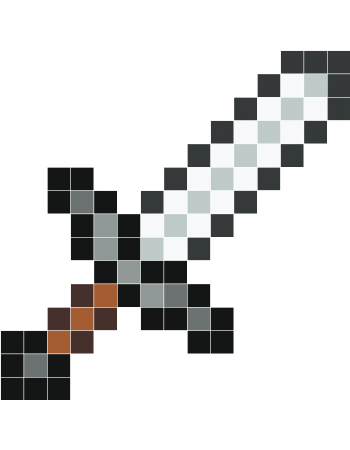
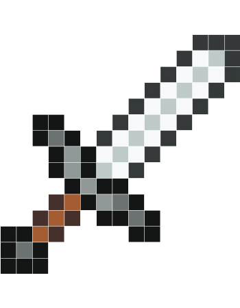
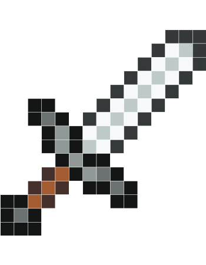

1
div {color : red;
background-color : blue;
width : 40px;
display : flex;
position : absolute;
top : 20%:
left : 5em;
height : 40px;
float : left;}
2
3
pseudos elements
::before()
::after()
les ombres
text-shadow : x x x color;
box-shadow : x x x color;
les border radius
peuvent etre modifiée individuellement
ainsi
20% 40px 1em 2rem / 77% 99px 24rem 1%
4
